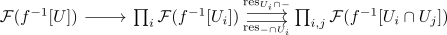
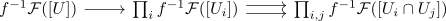

direct image sheaf
Definition
Let $(X, \mathcal{T}_X)$ be a topological space, $\mathcal{V}$ a category and $\mathcal{F}: \mathrm{Op}(X)^{\mathrm{op}} \rightarrow \mathcal{V}$ a V-valued sheaf Then for a topological space $(Y, \mathcal{T}_Y)$ and a continuous map $f: X \rightarrow Y$ the direct image sheaf $f_* \mathcal{F})$ is defined as sheaf on $Y$ with
\begin{align*}
f_*(\mathcal{F}): \mathrm{Op}(X)^{\mathrm{op}} \rightarrow& \mathcal{V} \\
U \mapsto& (f_*\mathcal{F})(U) = \mathcal{F}(f^{-1}[U]) \\
(\mathrm{res}_{U \rightarrow U'}: U \rightarrow U') \mapsto& (\mathcal{F}(\mathrm{res}_{f^{-1}[U] \rightarrow f^{-1}[U']}) \mathcal{F}(f^{-1}[U]) \rightarrow \mathcal{F}(f^{-1}[U']))
\end{align*}
Proof
Suppose $U \subseteq Y$ is open and $U_i \subseteq Y$ is an open covering. Then $f^{-1}[U]$ is open in $X$ and furthermore, $f^{-1}[U_i]$ is also an open covering of $f^{-1}[U]$ (cf. open covering under continuous preimage)
Thus by assumption

is an equalizer and hence by construction also
